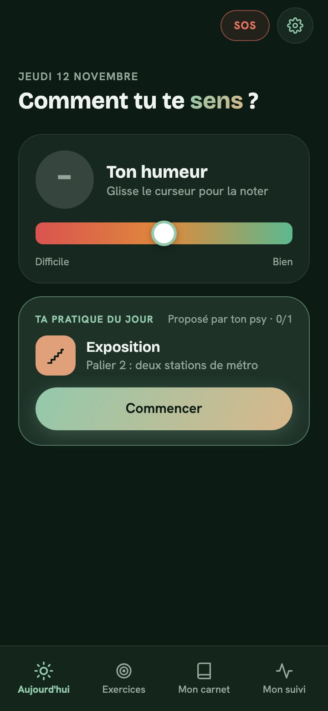
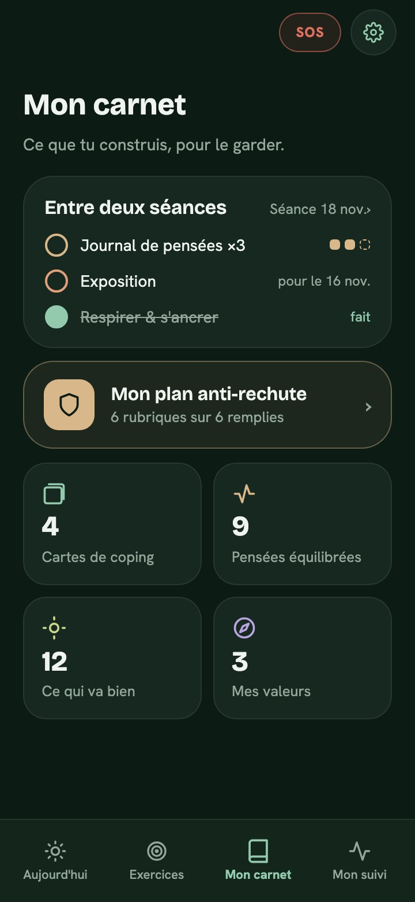
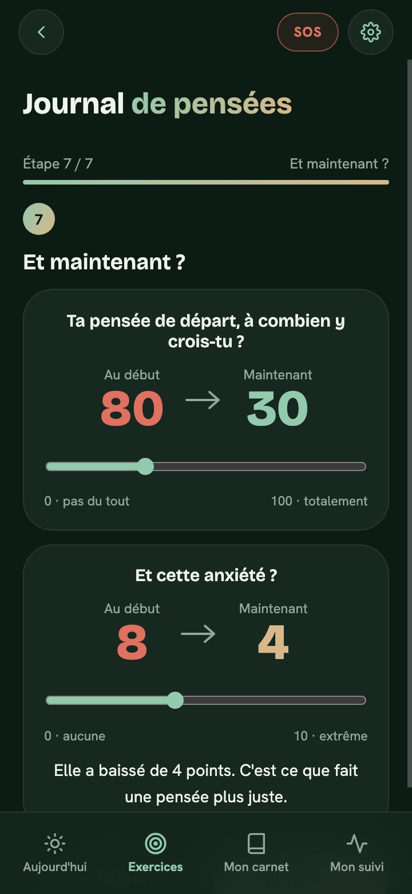
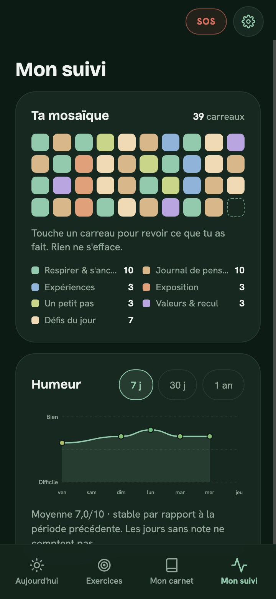
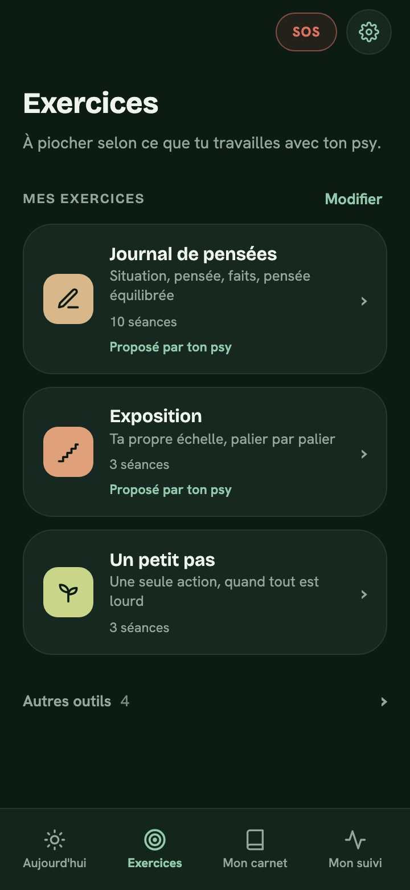
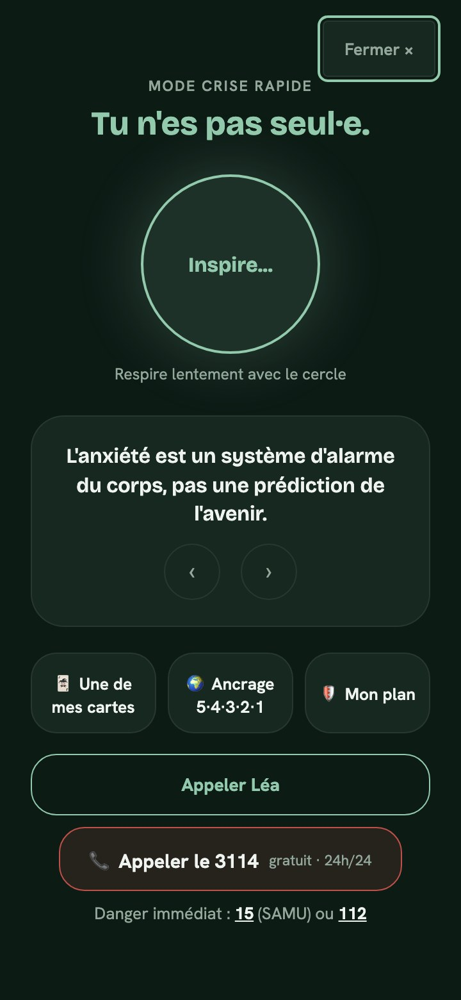
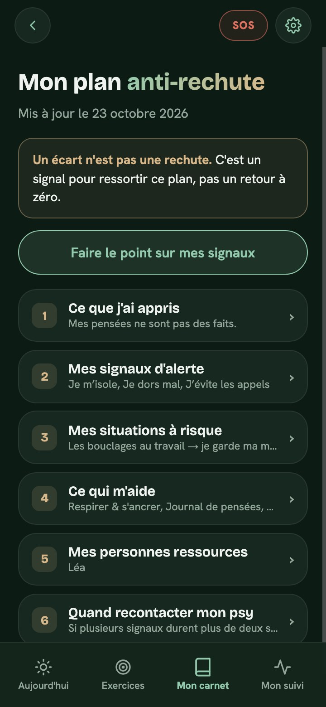

Tes exercices de TCC
entre les séances.
Ceux que ton psy te propose, à portée de main. Un par jour, à ton rythme.

Comment ça marche



Sept exercices.
Les tiens d'abord.
Ceux de la TCC et de l'ACT, comme en séance : journal de pensées, expériences, exposition, petit pas, respiration, valeurs, inquiétudes.
Ce que ton psy te propose passe en premier
Tu le notes en fin de séance. L'app te le propose chaque jour, et ça avance quand tu le fais.
Un récap pour ta prochaine séance
Exercices faits, humeur, pensées travaillées : prêt à montrer, si tu veux.
Pas de série à tenir
Chaque exercice mené au bout ajoute un carreau à ta mosaïque. Aucun jour « raté », rien ne s'efface.
SOS toujours en haut de l'écran
Respiration, ancrage, une de tes cartes, ton plan, et l'appel direct du 3114.



Après la thérapie,
l'app reste.
Quand le suivi se termine, tu l'indiques dans l'app. Elle t'aide alors à garder ce qui a marché.
Ton plan anti-rechute
Tes signaux d'alerte, ce qui t'aide, qui appeler, quand recontacter ton psy. À remplir avec lui en fin de thérapie.
Le point du mois
Tous les 30 jours, un regard sur tes signaux d'alerte. Sans score ni alarme.
Tes engagements
Les exercices que tu choisis de garder deviennent tes engagements de maintien.
César Broche Aguilar
Psychologue du travail · formé aux TCC
Fondateur de Serein
Conçue par un
psychologue.
Serein Relais est conçue par César Broche Aguilar, psychologue du travail formé aux thérapies cognitives et comportementales (TCC).
Les exercices sont ceux qu'on propose en thérapie, et leur déroulé reste fidèle à la méthode. Dans l'exposition, par exemple, tu notes ce que tu crains avant et ce qui s'est passé après : c'est ce que tu apprends qui compte, pas ton niveau d'anxiété.
L'app ne pose pas de diagnostic et ne remplace pas un suivi. Elle prolonge le travail fait en séance.
Vous êtes psychologue ou psychothérapeute ? Voyez comment l'utiliser avec vos patients →
Ce que tu écris reste chez toi.
Pas de compte, pas de pub, aucune donnée envoyée. Tout reste sur ton téléphone. Confidentialité →
Questions
Non, mais l'app est pensée pour accompagner une thérapie.
Non. Tu peux lui montrer un récap si tu le souhaites.
Oui. Pas d'abonnement, pas de publicité, pas d'achat dans l'app.
Serein propose des méditations guidées. Serein Relais sert à faire des exercices de TCC, entre les séances et après la thérapie.
Depuis les réglages, tu peux exporter tes données dans un fichier, puis l'importer sur le nouveau téléphone.
Si tu es suivi·e, parles-en à ton psy dès que tu en ressens le besoin, sans attendre la prochaine séance. L'app ne remplace pas un suivi. Appelle le 3114, gratuit, 24h/24. En cas de danger immédiat : 15 ou 112.
Un retour,
une question ?
Un bug, une idée, un retour de patient ou de psy : je réponds à chaque message.